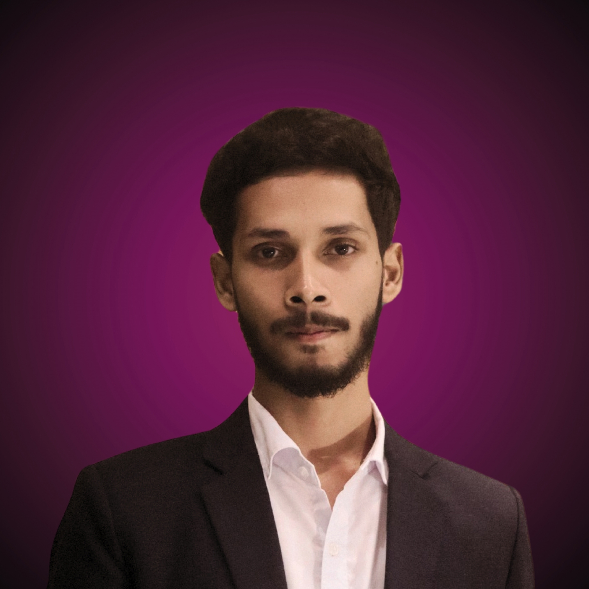

Curriculum Vitae
Shahriar Hossain
Full-Stack developer with a product mindset and experience shipping SaaS dashboards and IoT platforms into real usage. I’ve worked as a technical lead and builder on projects where reliability, UX, and deployment actually matter.
I’m looking for roles where I can own features end-to-end: from API design and database schema to React/Next.js UI, deployments, and monitoring.

Experience
Professional & project experience timeline.
Mix of startup responsibilities, client work, and university-driven products. Titles are blended because I usually own both engineering and product decisions.
-
CTO & Full-Stack Lead · XFishery - Smart Aquaculture Platform
- Architecting XFishery: farmer & admin dashboards, device management, and per-device runtime tracking stored in MongoDB.
- Designed & implemented Node.js/Express backend with JWT auth, role-based access (admin / farmer), and REST APIs consumed by a Next.js frontend.
- Integrated pond devices (aerators, feeders, sensors) via ESP32, UART and MQTT, sending live data to dashboards hosted on AWS EC2 & Vercel.
- Leading small tech team, planning phases, and communicating progress with non-technical stakeholders such as farmers & NGO partners.
-
Co-founder & Tech Lead · Lex.AI - Legal-Tech AI Assistant
- Co-created Lex.AI, an AI-powered legal guidance assistant that explains legal steps in simple Bangla/English and routes users to the right help.
- Built MVP web interface, API integration with LLM backend, and designed the information architecture for flows like “file a case”, “police station steps”, etc.
- Contributed to pitch, demo and technical roadmap - Lex.AI won the DIU Accelerator Cup 2023 with ~10L seed funding.
-
Full-Stack Developer · MediTrack - Pharmacy Management SaaS
- Designed and implemented a MERN-based pharmacy management system handling inventory, sales, invoicing and reports.
- Deployed backend on AWS EC2 and frontend on Vercel with a custom domain, configuring Nginx reverse proxy and environment-specific settings.
- Focused on stable UX for non-technical pharmacy owners: minimal clicks, clear tables, and predictable flows.
-
Full-Stack / Tools Builder · DIU student utilities
- Built internal tools such as class routine managers, CGPA planners and dashboards used by classmates and juniors.
- Owned complete lifecycle from gathering feedback to launching on the web and iterating based on usage.
Education & skills
Formal background plus the stacks I use daily.
Education
B.Sc. in Computer Science & Engineering
Daffodil International University (DIU) · 4-year program
- Focused on software engineering, databases, networking, and IoT.
- Built multiple course projects that later evolved into real products.
- Active in tech & startup communities, hackathons, and accelerator programs.
Tech stack snapshot
These are the technologies I’m comfortable using in production projects.
Achievements & beyond code
Highlights that show how I work under pressure.
Selected achievements
- Champion - DIU Accelerator Cup 2023 with Lex.AI, securing ~10L seed funding as tech & co-founder.
- Multiple production deployments (XFishery, MediTrack, internal tools) running on AWS EC2 + Vercel with real users.
- IoT deployments in real ponds for monitoring water quality and controlling aerators/feeders with ESP32 & dashboards.
- Active community contributor in university and local startup ecosystem, often helping juniors with tech decisions.
Outside work
- ECB Lightforce captain - futsal experience that shaped my leadership, communication and strategy thinking.
- 10km runner - completed official 10k events and regular training, bringing discipline & consistency into my daily routine.
- Enjoy mentoring friends and juniors on project ideas, portfolio building, and realistic roadmaps for SaaS products.